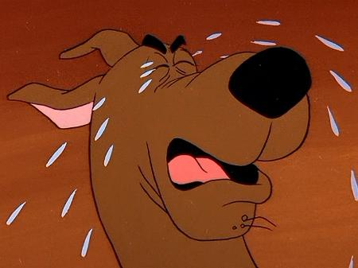

It'svery clear that Scooby has some issues due treatment that it receives from his "friends" and instead of acting angrily, Scooby reflects its misery with awkward and desperate sounds... for you, reader, to understand it, click on each image of this website to hear it.
Scoobyhides his pain through many facets. Sometimes with a disposable smile or a yawn. It's pretty obvious that hungry is one of the core reasons for its syndrome - I'll further explain why they feed Scooby with only, and only, cookies.
Tourette:a common neurodevelopmental disorder. Its characterized by multiple movement tics and at least one vocal tic - in this case, multiple voice tics.
Daily, Scooby suffers from mistreatment. It is immeasurable the hardship of its daily activities... since the moment that Scooby wakes up till its short sleep moments. As we can see, Shaggy throws away Scooby's food, and, unfortunately, due to Scooby's psychological problems, he starts to imagine a creepy figure laughing at him - but the truth is that the food was sprawled all around on the ground.
We can't imagine how Scooby can handle all of this: pain, hungry, loneliness, hallucinations... we need to stand for Scooby.
#SAVESCOOBY
#WEAREALLSCOOBY
#NOMORESCOOBYSNACKS
#M196834 #V203405